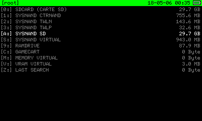
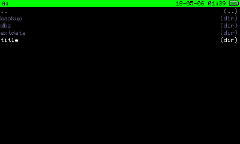
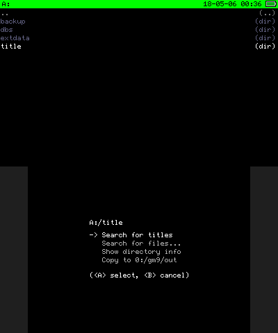
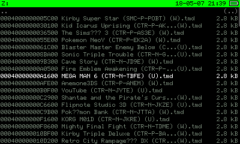
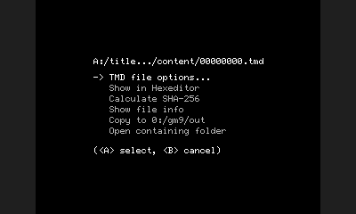
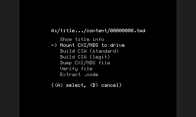
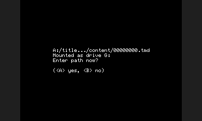
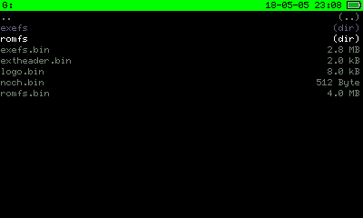
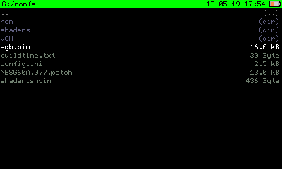
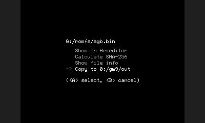

GBA Bios dumping guide
by: Glazed_Belmont
In this guide, I will show you how to dump a GBA bios from one of your installed Virtual Console titles.
Note that not all VCs come with GBA bios, the GBA and GameGear don't seem to come with one
What you'll need: * A 3ds family system (3ds,2ds,etc.) * CFW (Luma+B9S) if you don't have CFW, go on https://3ds.hacks.guide/ to install it. * Godmode9 (You should already have it due to the CFW guide.) * Access to your SD card * Any valid 3DS Virtual Console game
Section I: Dumping
- Boot while holding the Start button to access Godmode9.

- Navigate to 《[A:] SYSNAND SD》 and press A.

- Hover on 《title》 and press R+A.

- Press A on 《Search for titles》 and wait until it finishes searching.

-
At this point, you will see all your installed titles.
-
Find the Virtual Console game that you want to extract the GBA bios from and press A on it.

- Press A on 《TMD file options...》.

- Press A on 《Mount CXI/NDS to drive》.

- Confirm with A.

- You will see a folder called 《romfs》 , press A on it.

- In the 《romfs》 folder, if there is a file called 《agb.bin》, guess what, that's your GBA bios.

- Press A on 《copy to gm9/out》 and you now have a legally obtained GBA bios.
